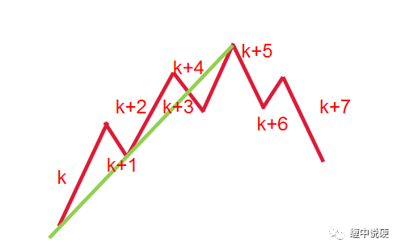
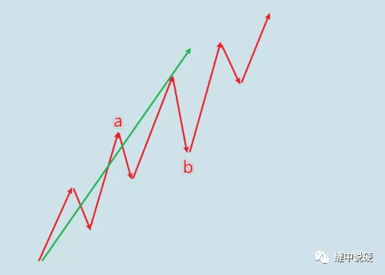
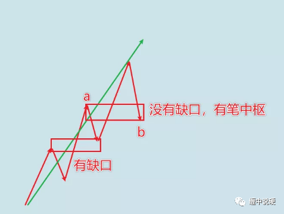

缠论中如何严格画段
1：一个线段必然是3根或者3根以上数量构成，但三根笔并不一定构成线段。
三根笔，至少要有重合才有可能构成线段
三根不重合的笔是不可能构成线段的。
2：线段的必然只能被线段破坏，单根一笔是不可能破坏线段。
原文中有提到过特征序列的笔破坏，这只是为了方便画线段。

红色的是笔，蓝色的是段。
在向上的段中，向下的笔称为：向上段的特征序列，其中最近的两个特征序列如果有触碰，则称为笔破坏，如上图ab，cd都是向上段的特征序列，其中点d点小于或者等于a点，则发生笔破坏。

需要注意的是，笔破坏并不表示线段结束，如上图b点小于等于a，但依然可以继续上涨。
3：什么是线段的特征序列
简单理解，线段特征序列是构成线段反向的笔。
向上线段，向下笔就是特征序列；
向下线段，向上笔就是特征序列。

4：根据笔是否被破坏，可以将线段的特征序列分为两类：
1：有缺口的特征序列；
2：没有缺口的特征序列；
5：如何判断线段的结束？
分两类，有缺口的特征序列和没有缺口的特征序列；先说没有缺口的。
判断线段结束和笔差不多，都是找顶底分型；
不同的是，笔用k线，线段用特征序列做为基本元素寻找顶底分型。
特征序列的顶分型用向下笔构成；
特征序列的底分型用向上笔构成。
如下图：

K+3，K+5，k+7构成了特征序列的顶分型，确认了向上线段的结束。